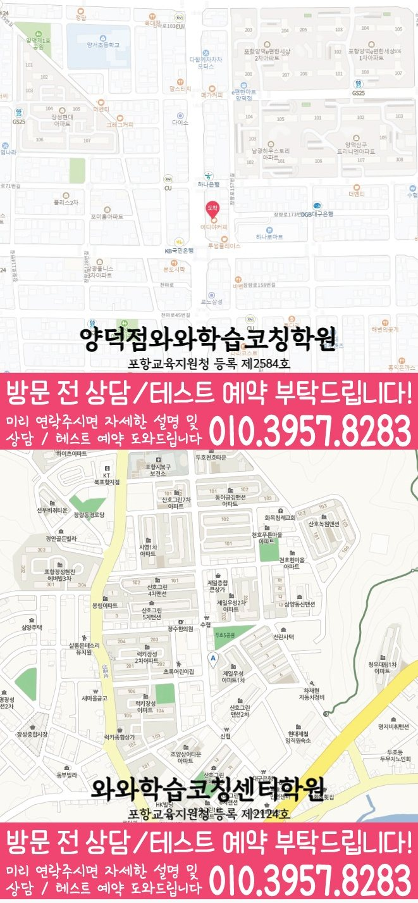

MIDDLE SCHOOL ENGLISH GUIDE
장량동 중2 영어학원
경상 포항시 장량동 중2 영어학원 선택을 위해 와와학습코칭센터 양덕점 공개 정보와 교과서·문법·독해·어휘·서술형 학습 및 상담 기준을 정리했습니다.
장량동경상 포항시
중2영어 가능 학년 기재



핵심 답변
장량동 중2 영어학원, 무엇부터 확인해야 할까요?
장량동에서 중2 영어학원을 비교할 때는 교과서 진도만 보지 말고 어휘 재현, 문법 적용, 독해 근거, 서술형 수정과 시험 전 복습 기록을 함께 살펴야 합니다. 중1 기초 문법의 공백이 중2 교과서 해석까지 이어지는 학생이라면 특히 내신 일정이 다른 영역으로 어떻게 연결되는지 확인하는 것이 좋습니다.
LOCAL ENGLISH STUDY GUIDE
경상 포항시 장량동 중2 영어 학습 설계
중2 영어는 중1에서 배운 기본 구조가 교과서의 긴 문장과 학교별 평가 문항으로 확장되는 시기입니다. 장량동 학생의 현재 답안을 기준으로 공백을 찾고, 무리한 진도보다 재현 가능한 학습 순서를 세우는 것이 먼저입니다. 장량동 학습 계획에는 완료 여부뿐 아니라 며칠 뒤 해설 없이 다시 설명한 결과까지 남겨야 다음 복습량을 조정할 수 있습니다.
장량동 중2 영어에서 함께 관리할 네 영역
어휘는 교과서 문맥과 함께 누적
단어 뜻 하나만 외우기보다 교과서 속 쓰임, 품사 변화, 함께 쓰이는 표현과 유의어를 묶고 일정 간격으로 다시 확인합니다. 장량동에서 이 기준을 적용할 때에는 중1 기초 문법의 공백이 중2 교과서 해석까지 이어지는 학생이라면 이 항목의 난도를 높이기 전에 기본 문장에서 정확하게 재현되는 횟수를 먼저 확인하는 편이 좋습니다.
문법을 답이 아닌 문장 구조로 확인
용어 암기에 머물지 않도록 문장 성분과 시제 단서를 먼저 찾게 하고 정답 형태를 선택한 근거를 짧게 적습니다. 장량동에서 이 기준을 적용할 때에는 양덕중 장흥중 대도중 환호여중 시험지를 활용한다면 맞힌 문제 중에서도 근거를 설명하지 못한 항목을 따로 표시해 우연한 정답을 구분합니다.
서술형은 수정 이유를 남기는 방식으로
답안을 다시 쓰게 할 때 철자만 고치지 않고 내용 누락, 어순, 동사 형태, 문법 조건을 나눠 어떤 이유로 수정했는지 기록합니다. 장량동에서 이 기준을 적용할 때에는 공개된 학교명이 없는 경우에도 현재 교과서와 최근 답안을 기준으로 같은 확인 절차를 적용할 수 있으며 학교 정보는 임의로 만들지 않습니다.
독해는 근거 문장과 연결어까지 표시
첫 문장부터 끝까지 같은 속도로 해석하기보다 문단 역할을 나누고 답을 판단한 근거가 어느 문장에 있는지 표시합니다. 장량동에서 이 기준을 적용할 때에는 양덕중 장흥중 대도중 환호여중 자료가 있다면 정답 표시보다 틀린 문장과 수정 흔적을 가져가 수업 반영 방식을 구체적으로 확인할 수 있습니다.
양덕중 장흥중 대도중 환호여중 등 학교 자료를 확인할 때의 기준
와와학습코칭센터 양덕점의 공개 학교 목록에는 양덕중 장흥중 대도중 환호여중 등이 기재되어 있습니다. 특정 학교의 출제 경향을 임의로 만들지 않고 최근 답안과 현재 학교 공지를 학습 근거로 사용합니다.
어휘 확인 범위
장량동의 어휘 범위는 본문 표제어에서 끝내지 않습니다. 변형 형태·숙어·유의어와 와와학습코칭센터 양덕점 수업에서 추가된 표현까지 포함됐는지 따로 확인합니다. 장량동 상담 기록에는 처음 진단한 내용과 다음 확인 날짜를 함께 적어 두어 실제 피드백이 계획에 반영됐는지 비교합니다.
교과서와 부교재
시험 범위에 포함된 본문, 대화문, 추가 읽기 자료와 학교 프린트의 우선순위를 구분합니다. 장량동에서는 중1 기초 문법의 공백이 중2 교과서 해석까지 이어지는 학생에게 같은 기준을 적용했을 때 어느 단계에서 시간이 오래 걸리는지 따로 기록해 보는 것이 좋습니다.
서술형 조건
문장 수, 핵심 표현, 어순과 문법 조건을 나누고 답안을 고친 이유까지 확인합니다. 장량동에서 이 기준을 적용할 때에는 학생이 질문을 기다리지 않도록 막힌 문장에 표시하고, 와와학습코칭센터 양덕점 수업에서 확인한 뒤 유사 문장에 적용하는 단계까지 이어지는지 봅니다.
내신 일정을 중심으로 구성한 주간 수업 흐름
01. 범위와 일정 나누기
시험일까지 남은 주차와 교과서·프린트·단어 범위를 작은 완료 단위로 나눕니다. 장량동 상담에서는 양덕중 장흥중 대도중 환호여중의 실제 시험 범위를 준비해 이 기준이 현재 단원에도 맞는지 확인하는 편이 안전합니다.
02. 문장 단위 보완
부족한 개념을 짧게 정리한 뒤 교과서 문장과 새 문장에 같은 기준을 적용합니다. 장량동에서 이 기준을 적용할 때에는 와와학습코칭센터 양덕점의 시간표와 함께 이 활동에 필요한 수업 외 복습 시간을 물어봐야 학생이 실제로 실행할 수 있는 분량을 정할 수 있습니다.
03. 변형 문제 설명
답을 고른 이유와 다른 선택지가 틀린 이유를 지문 근거로 설명합니다. 장량동에서 이 기준을 적용할 때에는 이 항목은 와와학습코칭센터 양덕점의 공개 정보만으로 수업 방식을 단정하기보다 실제 교재와 피드백 예시를 상담에서 확인하는 기준으로 사용합니다.
04. 간격을 둔 재확인
해설 없이 다시 해석하고 쓸 날짜를 정해 일시적인 암기인지 확인합니다. 장량동에서 이 기준을 적용할 때에는 와와학습코칭센터 양덕점에 문의하기 전에는 시험 전 본문·어휘·문법 복습 완료 기준이 적혀 있는지를 적어 두면 이 항목을 학생 상황과 연결해 설명받기 쉽습니다.
장량동 학생의 답안에서 시작하는 영어 점검 순서
진단 신호
장량동에서는 긴 문장을 읽을 때 주어와 동사보다 익숙한 단어만 이어 붙이는지부터 살펴봅니다. 중1 기초 문법의 공백이 중2 교과서 해석까지 이어지는 학생에게 같은 기준을 적용하면 막힌 위치를 진도보다 구체적으로 나눌 수 있습니다.
첫 학습 행동
본문 암기 전 문장 구조와 핵심 표현을 설명하게 해 외운 문장과 이해한 문장을 나눕니다. 공개 자료에 기재된 양덕중 장흥중 대도중 환호여중의 실제 교과서와 시험 범위는 상담 시 최신 자료로 대조합니다.
완료 판단
질문 표시가 사라진 것이 아니라 유사 문장을 혼자 해결한 기록이 있을 때 이해한 것으로 판단합니다. 이 결과는 와와학습코칭센터 양덕점 상담에서 다음 주 복습량을 조정하는 질문으로 사용합니다.
일정 배치
주중 실행 여부를 기록해 계획보다 오래 걸린 영역의 다음 분량을 줄이거나 순서를 바꿉니다. 와와학습코칭센터 양덕점의 공개 위치 안내인 ‘양덕 하나로마트 근처, 양덕 농협사거리 롯데리아 사이 건물, 이디야 건물 4층,’도 참고해 통학 시간을 계산하되 실제 이동 동선은 상담 전에 다시 확인합니다.
간격을 둔 재확인
장량동 학습 기록에서는 시간 제한이 없을 때와 있을 때의 독해 근거 정확도를 비교해 속도 문제와 이해 문제를 나눕니다. 양덕중 장흥중 대도중 환호여중 자료의 현재 범위와 겹치는 문장부터 확인합니다.
근거 기록
독해 기록은 풀이 시간과 정답뿐 아니라 선택 근거가 있었던 문장 위치까지 적어 비교합니다. 이 기록을 와와학습코칭센터 양덕점의 다음 수업 계획과 대조해 피드백이 실제 행동으로 이어지는지 봅니다.
상담 비교 기준
피드백이 자세하다는 표현보다 오류 원인과 다음 재확인 날짜가 실제 기록에 있는지 봅니다. 경상 포항시의 일정과 장량동 학생이 확보한 복습 시간을 함께 놓고 판단합니다.
와와학습코칭센터 양덕점에 문의할 때는 “중1 공백을 보완한 뒤 현재 중2 단원에 바로 적용하는 단계가 있는지”를 확인하고, 시험 전 본문·어휘·문법 복습 완료 기준이 적혀 있는지도 최근 답안과 함께 준비하면 수업 설명을 학생 상황에 맞춰 비교하기 쉽습니다.
장량동 중2 영어 학습 기록을 읽는 다섯 기준
답안에서 찾을 신호
장량동 기록에서는 교과서 본문에서 해석이 멈춘 문장과 시간이 오래 걸린 문장을 구분합니다. 학교별 특징을 추정하지 않고 학생이 준비한 실제 범위와 공지를 근거로 삼습니다.
첫 수업의 행동
장량동 학생에게는 암기한 본문은 어순이나 시제를 바꾼 문장에서도 의미를 유지하는지 확인합니다. 와와학습코칭센터 양덕점 상담에서는 이 행동이 실제 피드백에 남는지 확인합니다.
완료와 재확인
장량동의 완료 기준은 다음과 같습니다. 수업 직후의 정답과 주중 재확인 결과가 모두 남아야 이해가 유지됐는지 판단합니다. 다음 확인일의 결과가 달라지면 장량동의 복습 순서부터 다시 조정합니다.
주간 일정 배치
장량동 주간표에는 통학과 다른 과목 시간을 뺀 실제 여유 시간을 기준으로 영어 분량을 다시 계산합니다. 양덕중 장흥중 대도중 환호여중의 현재 일정은 학생이 가져온 자료로 다시 대조합니다.
상담에서 물을 질문
와와학습코칭센터 양덕점에 문의할 때는 사용 교재 이름보다 학생이 설명하고 고치는 시간이 실제 수업에 있는지 질문합니다. 시험 전 본문·어휘·문법 복습 완료 기준이 적혀 있는지도 최근 답안과 함께 확인합니다.
기록 해석
장량동의 영어 기록을 볼 때는 학교 자료별 남은 범위를 교과서·프린트·수행평가로 나눠 누락된 준비를 확인합니다. 와와학습코칭센터 양덕점에서는 이 기록이 다음 과제에 반영되는지도 확인합니다.
가정 복습 연결
장량동 학생의 실제 생활 시간에는 학교 일정이 바뀐 날에는 남은 분량을 다시 나누고 미룬 이유를 계획표에 기록합니다. 실행 여부는 다음 상담에서 계획표와 함께 확인합니다.
다음 주 조정
장량동의 다음 주 계획은 고정하지 않습니다. 독해 근거가 흔들리면 다음 지문에서 연결어와 대명사 표시부터 다시 시작합니다. 조정 결과는 학생 답안으로 다시 확인합니다.
장량동 중2 영어학원을 비교할 때는 한 번의 점수보다 학생이 틀린 문장을 스스로 고치고 며칠 뒤 다시 설명할 수 있는지를 확인하세요. 장량동 페이지에 연결된 센터의 영어 가능 학년에서 중2를 확인했습니다. 장량동의 수업 횟수와 시작 시각은 고정값으로 단정하지 않습니다. 와와학습코칭센터 양덕점 상담 당시의 최신 운영표에서 확인합니다.
VERIFIED LOCAL FACTS
장량동 센터 정보와 수업 확인 항목
기존 전국학원 페이지와 공개 센터 자료에 있는 사실만 사용했으며, 기재되지 않은 학교나 운영 조건은 임의로 만들지 않았습니다.
경북 포항시 북구 천마로 66 환호빌딩 402호
포항교육지원청 등록 제2584호
공개 센터 자료의 영어 가능 학년에 중2가 포함되어 있습니다. 실제 반 편성과 일정은 와와학습코칭센터 양덕점 상담에서 확인해야 합니다.
수업 횟수·시간표·보강 기준과 함께 비교합니다.
양덕 하나로마트 근처, 양덕 농협사거리 롯데리아 사이 건물, 이디야 건물 4층,
공개 자료의 중학교 안내 · 1개
공개 자료의 영어 가능 학년
센터 교습비 자료 확인상담 전 체크리스트
장량동 중2 영어학원 비교 전에 적어둘 내용
장량동 학생의 시험지에서 시험 전 본문·어휘·문법 복습 완료 기준이 적혀 있는지를 확인할 수 있는 문장과 수정 흔적을 한두 개 표시합니다.
중1 기초 문법의 공백이 중2 교과서 해석까지 이어지는 학생에게 어휘·문법·독해·서술형 중 먼저 바꿀 영역을 하나 정하고 내신 일정과의 연결을 메모합니다.
와와학습코칭센터 양덕점의 공개 교습비 자료와 주당 횟수, 수업 시각, 결석·보강 기준을 같은 표에서 비교합니다.
막힌 문장을 표시해 와와학습코칭센터 양덕점 상담에서 확인하고 비슷한 문장을 혼자 다시 풀 날짜도 정합니다.
FAQ & PARENT VIEW
장량동 중2 영어학원 자주 묻는 질문과 학부모 상담 관점
화면 질문과 답변은 JSON-LD에도 동일하게 반영했습니다. 상담 관점은 특정 성과를 보장하는 후기가 아니라 비교에 참고할 수 있도록 재구성한 예시입니다.
장량동 중2 영어학원 상담 전에 어떤 영어 자료를 준비하면 좋나요?
최근 영어 시험지, 교과서와 학교 프린트, 현재 단어장, 틀린 서술형 답안을 준비하세요. 특히 시험 전 본문·어휘·문법 복습 완료 기준이 적혀 있는지를 메모하면 시작점을 더 구체적으로 설명할 수 있습니다. 이 기준은 장량동 학생의 최근 답안과 학교 일정에 맞춰 확인합니다. 이 답변은 장량동 페이지의 공개 정보 범위에서 정리했습니다.
장량동 중2 영어학원은 어떤 학생에게 맞는지 어떻게 판단하나요?
중1 기초 문법의 공백이 중2 교과서 해석까지 이어지는 학생이라면 설명 뒤 문장을 스스로 해석하고 고치는 과정이 있는지 확인해야 합니다. 최근 시험에서 어휘·문법·독해·서술형 오류를 먼저 분류합니다. 양덕중 장흥중 대도중 환호여중 자료가 있다면 정답 표시보다 틀린 문장과 수정 흔적을 준비하는 것이 좋습니다. 이 답변은 장량동 페이지의 공개 정보 범위에서 정리했습니다.
와와학습코칭센터 양덕점에서 중2 영어 수강이 가능한가요?
공개된 와와학습코칭센터 양덕점 영어 가능 학년은 초1, 초2, 초3, 초4, 초5, 초6, 중1, 중2, 중3, 고1, 고2, 고3이며 중2가 포함되어 있습니다. 실제 시간표, 반 편성과 시작 가능일은 장량동 상담에서 최신 정보로 다시 확인합니다. 이 기준은 장량동 학생의 최근 답안과 학교 일정에 맞춰 확인합니다. 이 답변은 장량동 페이지의 공개 정보 범위에서 정리했습니다.
장량동의 학교별 영어 자료는 어떻게 확인하나요?
공개된 와와학습코칭센터 양덕점 자료에는 양덕중 장흥중 대도중 환호여중 등 1개 중학교가 기재되어 있습니다. 양덕중 장흥중 대도중 환호여중을 포함한 실제 교과서·시험 범위·일정은 상담할 때 최신 학교 자료로 다시 확인합니다. 경상 포항시 장량동의 통학·복습 시간을 함께 놓고 실행 가능한 분량인지 계산합니다. 이 답변은 장량동 페이지의 공개 정보 범위에서 정리했습니다.
중1 문법이 부족한 장량동 중2 학생도 현재 진도를 이어갈 수 있나요?
현재 중2 문장을 이해하는 데 필요한 중1 개념만 찾아 짧게 복원한 뒤 바로 교과서 문장에 적용할 수 있습니다. 실제 보완 범위는 최근 답안으로 정합니다. 이 기준은 장량동 학생의 최근 답안과 학교 일정에 맞춰 확인합니다. 이 답변은 장량동 페이지의 공개 정보 범위에서 정리했습니다.
장량동 중2 영어학원 서술형 오답은 어떻게 다시 확인하나요?
철자만 고치지 않고 내용 누락, 어순, 동사 형태와 문법 조건을 나눠 수정 이유를 남깁니다. 며칠 뒤 해설 없이 같은 의미의 문장을 다시 작성하는지도 봅니다. 이 기준은 장량동 학생의 최근 답안과 학교 일정에 맞춰 확인합니다. 이 답변은 장량동 페이지의 공개 정보 범위에서 정리했습니다.
장량동 학생의 영어 단어 복습 간격은 어떻게 정하나요?
한 번에 외운 양보다 수업 당일·주중·시험 전처럼 간격을 두고 다시 재현할 날짜를 정합니다. 문장 속 품사와 쓰임까지 함께 확인해야 합니다. 중1 기초 문법의 공백이 중2 교과서 해석까지 이어지는 학생에게 적용할 때는 완료 날짜와 재확인 결과를 함께 기록합니다. 이 답변은 장량동 페이지의 공개 정보 범위에서 정리했습니다.
RELATED GUIDES
장량동 중2 과목과 다른 지역 비교
같은 동네 수학 안내와 시군구·광역권을 우선한 영어 페이지를 상호 연결했습니다.